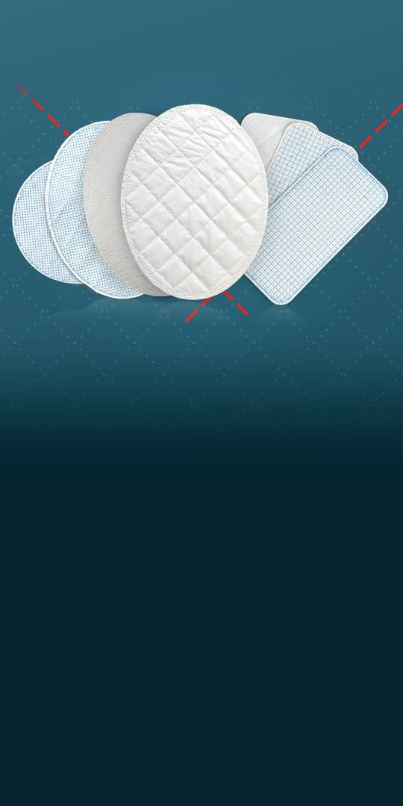
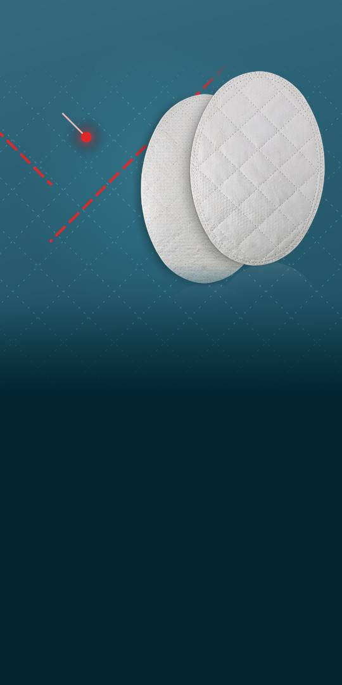
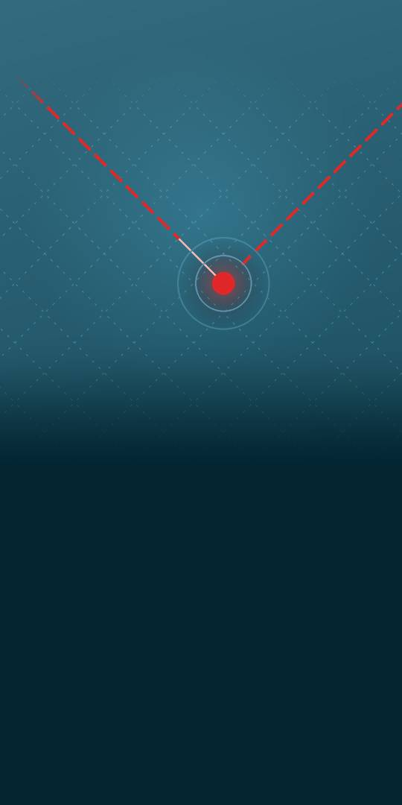
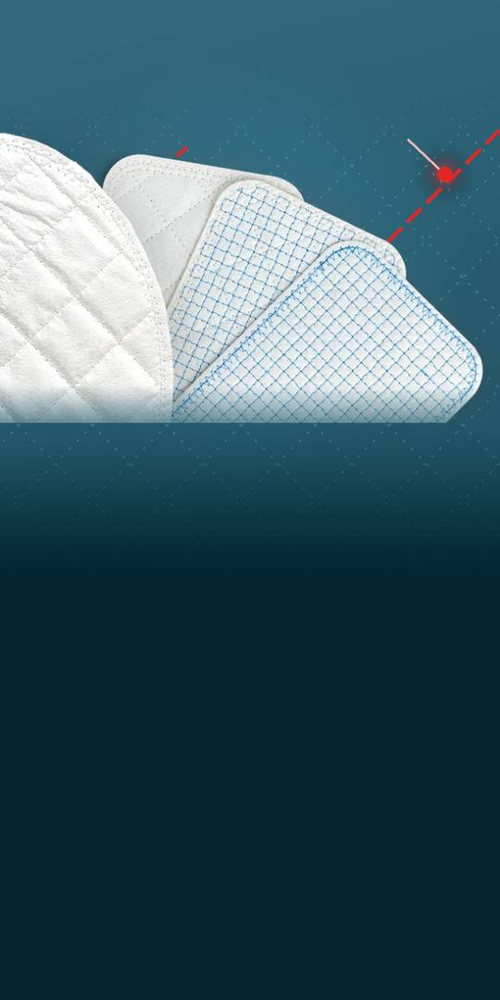
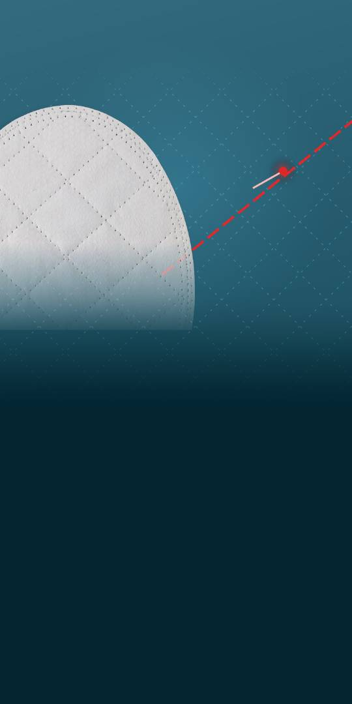

U.S. addressable market, OviTex (10-K)
Reinforced tissue
matrices for soft-tissue
reconstruction.
OviTex is used in hernia repair and abdominal wall reconstruction; OviTex PRS in plastic and reconstructive surgery. The $1.8B is not a revenue forecast.

1S and 2S, per the company (10-K)
Tissue, stitched with
polymer thread.
OviTex Core has four layers of ovine rumen tissue, 1S six and 2S eight. Depending on configuration, the company says its polymer content is about 75% less than the most widely implanted permanent synthetic mesh (10-K).

Liora 510(k) clearance
A resorbable mesh,
cleared by the FDA.
Cleared for soft-tissue reinforcement, specifically in muscle-flap transfer procedures, as temporary support to help secure the flaps (FDA 510(k) summary). A 510(k) is not an approval: the FDA found it equivalent to an earlier device, without clinical performance data. The Oct 5 release gives no launch date or sales.

(10-Q); H1 2025: $38.7M
H1 2026 revenue
down 1%, 2025 up 16%.
Q2 revenue was down 4%, on lower OviTex PRS sales and U.S. price/mix (10-Q). 2025 revenue: $80.3M, up from $69.3M (10-K). H1 2026 net loss: $23.5M, up 11% from $21.2M (10-Q). 2026 revenue guidance withdrawn Aug 10 (8-K).

Dec 31, 2025: $50.8M
Substantial doubt
about going concern.
The company's Aug 11 10-Q states this doubt, citing losses and a probable miss of its loan's revenue covenant. Unless waived, default could let the lender demand the $60.0M (due Nov 2030); the company does not expect to have the liquidity to repay. Lenders agreed Sep 28, after the 10-Q, not to test that covenant for Q3 and Q4 2026 only (8-K).